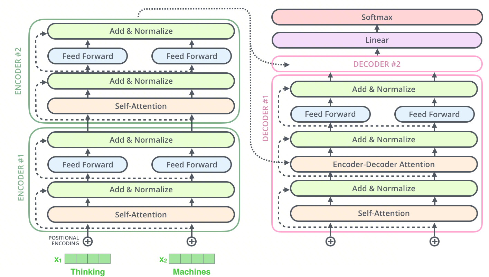
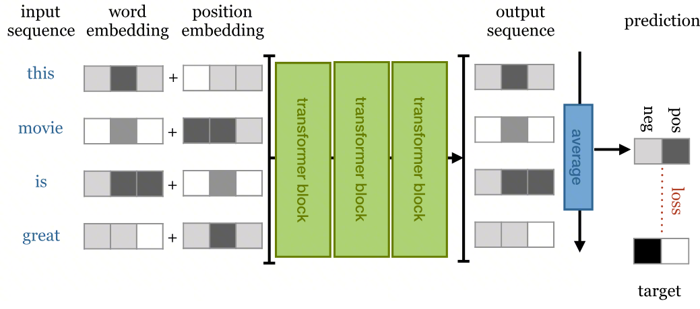

动手学AI ⚡️ 手写Transformer 04：模型组装¶
上一篇我们造好了多头注意力、前馈网络、残差连接等核心零件，准备合体！（我来组成头部，我来组成……）
系列目录¶
1. Mask 构造函数¶
在组装模型之前，先补上上一章遗留的问题——两个关键的 mask 函数。它们控制着注意力机制"能看到什么、不能看到什么"。
1.1 Padding Mask¶
交叉注意力用 padding mask，屏蔽 <pad> 位置，让模型不关注无意义的填充：
Q 看 K → 我 吃 苹果 <pad>
<sos> [ 1 1 1 0 ]
I [ 1 1 1 0 ]
eat [ 1 1 1 0 ]
apple [ 1 1 1 0 ]
应用 mask 前:
我 吃 苹果 <pad>
<sos> [ 0.5 1.2 0.8 0.3 ]
I [ 0.9 2.1 0.4 0.1 ]
eat [ 0.3 1.8 2.5 0.6 ]
apple [ 1.1 0.7 2.9 0.2 ]
应用 mask 后：
我 吃 苹果 <pad>
<sos> [ 0.5 1.2 0.8 -1e9 ]
I [ 0.9 2.1 0.4 -1e9 ]
eat [ 0.3 1.8 2.5 -1e9 ]
apple [ 1.1 0.7 2.9 -1e9 ]
import torch
import torch.nn as nn
import numpy as np
def make_pad_mask(q, k, pad_idx=0):
"""
构造 Padding Mask
k.ne(pad_idx): 不等于 pad 的位置为 True(1)，是 pad 为 False(0)
输出 shape: (Batch, 1, 1, K_Len)，会在 head 和 Q_len 维度广播
"""
mask = k.ne(pad_idx).unsqueeze(1).unsqueeze(2)
return mask
1.2 Subsequent Mask¶
自注意力用 Subsequent Mask——下三角矩阵，防止 Decoder 看到未来信息：
Q 看 K → <sos> I eat apple
<sos> [ 1 0 0 0 ] ← 只能看自己
I [ 1 1 0 0 ] ← 只能看 <sos> 和 I
eat [ 1 1 1 0 ] ← 看不到 apple
apple [ 1 1 1 1 ] ← 全部能看
应用 mask 前的 attention score:
<sos> I eat apple
<sos> [ 2.1 0.8 -0.3 1.5 ]
I [ 0.5 3.2 1.1 0.7 ]
eat [ 0.3 1.0 2.8 0.4 ]
apple [ 0.1 0.6 0.9 3.0 ]
应用 mask 后（mask==0 的位置填 -1e9）：
<sos> I eat apple
<sos> [ 2.1 -1e9 -1e9 -1e9 ] ← 只能看自己
I [ 0.5 3.2 -1e9 -1e9 ] ← 只能看 <sos> 和 I
eat [ 0.3 1.0 2.8 -1e9 ] ← 看不到 apple
apple [ 0.1 0.6 0.9 3.0 ] ← 全部能看
应用 mask 后，被遮蔽的位置填 -1e9，softmax 后变为 0。
def make_subsequent_mask(seq_len):
"""
构造因果掩码（下三角矩阵）
输出 shape: (1, 1, seq_len, seq_len)
"""
mask = torch.tril(torch.ones((seq_len, seq_len), dtype=torch.uint8))
return mask.unsqueeze(0).unsqueeze(0)
1.3 Combined Mask¶
Decoder 的自注意力需要同时满足两种约束：不看 padding，也不看未来。怎么办？把两个 mask 做逐元素 &，都为 True 的位置才保留：
tgt_mask (padding): subsequent_mask (causal):
[[T, T, F, F]] [[T, F, F, F],
[T, T, F, F],
↓ 广播到 (4,4) [T, T, T, F],
[[T, T, F, F], [T, T, T, T]]
[T, T, F, F],
[T, T, F, F],
[T, T, F, F]]
逐元素 & 操作 →
combined_mask:
[[T, F, F, F],
[T, T, F, F],
[T, T, F, F], ← 位置2 的第3个token 本是 T&T=T，但 padding mask 说 F
[T, T, F, F]]
📖 Combined Mask 的广播机制具体是怎么工作的？
追踪 shape 变化：
tgt_mask = make_pad_mask(...)→(B, 1, 1, tgt_len)subsequent_mask = make_subsequent_mask(...)→(1, 1, tgt_len, tgt_len)
广播规则（从右向左对齐）：
| 维度 | tgt_mask | subsequent_mask | 广播结果 |
|---|---|---|---|
| dim0 (batch) | B | 1 | B |
| dim1 (head) | 1 | 1 | 1 |
| dim2 (Q_len) | 1 | tgt_len | tgt_len |
| dim3 (K_len) | tgt_len | tgt_len | tgt_len |
结果 shape：(B, 1, tgt_len, tgt_len)。tgt_mask 的 dim2=1 意味着每一行 Q 看到的 padding pattern 相同，而 subsequent_mask 提供了"每行 Q 只能看前面"的约束。& 操作取交集，同时满足两个条件。
1.4 测试 Mask¶
q_sim = torch.tensor([[1, 2, 3]])
k_sim = torch.tensor([[1, 2, 0, 0]]) # 0 是 pad
pad_mask = make_pad_mask(q_sim, k_sim, pad_idx=0)
print("Pad Mask:", pad_mask.squeeze())
# tensor([True, True, False, False])
subsequent_mask = make_subsequent_mask(5)
print("Subsequent Mask:\n", subsequent_mask.squeeze())
# tensor([[1, 0, 0, 0, 0],
# [1, 1, 0, 0, 0],
# [1, 1, 1, 0, 0],
# [1, 1, 1, 1, 0],
# [1, 1, 1, 1, 1]])
📖 Padding Mask 和 Subsequent Mask 有什么区别？
| 维度 | Padding Mask | Subsequent Mask |
|---|---|---|
| 功能目的 | 屏蔽填充的 pad token | 防止看到未来 token |
| 使用位置 | Encoder Self-Attn + Decoder Cross-Attn | Decoder Self-Attn |
| 依赖的信息 | 输入数据中哪些位置是 pad | 仅依赖序列长度 |
| 是否 batch 相关 | 是：不同样本 pad 位置不同 | 否：所有样本共享同一个下三角矩阵 |
| Shape 模式 | (B, 1, 1, K_len) |
(1, 1, T, T) |
两者解决的问题本质不同：Padding 是数据驱动的，Subsequent 是结构驱动的。Decoder Self-Attention 需要用 & 将两者合并为 Combined Mask。
2. 堆叠 Encoder¶

上图展示了 Transformer 的经典 Encoder-Decoder 架构。 左侧的编码器（Encoder）负责理解和编码输入信息，右侧的解码器（Decoder）负责生成目标输出。两者都由多个相同的层堆叠而成，通过残差连接（Add）和层归一化（Normalize）保持训练稳定。从编码器顶部指向解码器的长箭头，就是连接两端的"桥梁"——将编码后的上下文信息传递给解码器。
先聚焦左侧。Encoder 的实现很直接——堆叠多个 EncoderLayer，最后加一层 LayerNorm：
class Encoder(nn.Module):
def __init__(self, vocab_size, d_model, n_heads, d_ff, n_layers, dropout=0.1):
super().__init__()
self.layers = nn.ModuleList([
EncoderLayer(d_model, n_heads, d_ff, dropout) for _ in range(n_layers)
])
self.norm = nn.LayerNorm(d_model)
def forward(self, src, src_mask):
for layer in self.layers:
src = layer(src, src_mask)
return self.norm(src)
3. 堆叠 Decoder¶
注意 Decoder 核心块比 Encoder 多一步——首先通过带掩码的自注意力处理已生成的内容，然后通过交叉注意力参考 Encoder 的输出，最后经过前馈网络整合信息。最终输出经过 Linear 层和 Softmax 转换为词汇表上的概率分布。
Decoder 的堆叠结构与 Encoder 类似，但多了一个投影层——将 d_model 映射到 vocab_size，输出对应的词表索引：
class Decoder(nn.Module):
def __init__(self, vocab_size, d_model, n_heads, d_ff, n_layers, dropout=0.1):
super().__init__()
self.layers = nn.ModuleList([
DecoderLayer(d_model, n_heads, d_ff, dropout) for _ in range(n_layers)
])
self.norm = nn.LayerNorm(d_model)
self.projection = nn.Linear(d_model, vocab_size)
def forward(self, tgt, enc_output, src_mask, tgt_mask):
for layer in self.layers:
tgt, attn_map = layer(tgt, enc_output, src_mask, tgt_mask)
tgt = self.norm(tgt)
return self.projection(tgt), attn_map
📖 Decoder 的 projection 层为什么不需要 softmax？
这是一个重要的工程设计决策：
- 训练阶段：PyTorch 的
nn.CrossEntropyLoss内部已包含log_softmax + NLLLoss，直接传入 logits 比先做 softmax 再取 log 在数值上更稳定（log-sum-exp trick） - 推理阶段：若只需 argmax，softmax 是单调递增函数，不改变 argmax 结果，可省略。只有需要实际概率值（如 Beam Search 得分累积）时才需显式 softmax
- 内存效率：vocab_size 通常很大（30K-100K），延迟 softmax 可节省显存
4. 究极合体：完整 Transformer¶
零件齐了，开始组装。Transformer 类整合 Embedding、Encoder、Decoder，并在 make_masks 中统一构造所有 mask：
class Transformer(nn.Module):
def __init__(self, src_vocab_size, tgt_vocab_size, d_model, n_heads, d_ff, n_layers, dropout=0.1):
super().__init__()
self.src_embedding = TransformerInputLayer(src_vocab_size, d_model, dropout=dropout)
self.tgt_embedding = TransformerInputLayer(tgt_vocab_size, d_model, dropout=dropout)
self._encoder = Encoder(src_vocab_size, d_model, n_heads, d_ff, n_layers, dropout)
self._decoder = Decoder(tgt_vocab_size, d_model, n_heads, d_ff, n_layers, dropout)
self.src_pad_idx = 0
self.tgt_pad_idx = 0
def make_masks(self, src, tgt):
src_mask = make_pad_mask(src, src, self.src_pad_idx)
tgt_mask = make_pad_mask(tgt, tgt, self.tgt_pad_idx)
subsequent_mask = make_subsequent_mask(tgt.size(1)).to(src.device)
combined_mask = tgt_mask & subsequent_mask
return src_mask, combined_mask
def forward(self, src, tgt):
src_mask, tgt_mask = self.make_masks(src, tgt)
enc_output = self._encoder(self.src_embedding(src), src_mask)
dec_output, _ = self._decoder(self.tgt_embedding(tgt), enc_output, src_mask, tgt_mask)
return dec_output
# 专门暴露给推理阶段用的方法
def encode(self, src, src_mask):
return self._encoder(self.src_embedding(src), src_mask)
def decode(self, tgt, enc_output, src_mask, tgt_mask):
dec_output, _ = self._decoder(self.tgt_embedding(tgt), enc_output, src_mask, tgt_mask)
return dec_output
📖 为什么拆分 encode 和 decode 方法？
训练阶段：Encoder 和 Decoder 一起跑，一把梭。
推理阶段：逐词生成时，每一步都要重新跑 Decoder，但 Encoder 的输出始终不变（源句子没变）。拆开后 Encoder 跑 1 次，Decoder 跑 N 次，每次复用 enc_output，避免重复编码。
5. 全流程测试¶
用随机数据跑一遍，验证整条流水线是否通畅：
src_vocab_size = 100
tgt_vocab_size = 100
d_model = 512
n_layers = 2
n_head = 8
model = Transformer(src_vocab_size, tgt_vocab_size, d_model, n_head, d_ff=2048, n_layers=n_layers)
model.to(device)
# 伪造数据：Batch=2, Src_Len=5, Tgt_Len=6
# 0 是 pad，1 是 sos，2 是 eos
src = torch.tensor([[1, 5, 6, 2, 0], [1, 9, 2, 0, 0]]).to(device)
tgt = torch.tensor([[1, 7, 3, 4, 8, 2], [1, 6, 8, 2, 0, 0]]).to(device)
print("Source Shape:", src.shape) # (2, 5)
print("Target Shape:", tgt.shape) # (2, 6)
output = model(src, tgt)
print("Output Shape:", output.shape) # (2, 6, 100) → (batch, tgt_len, vocab_size)
输出解读：(2, 6, 100) 表示 2 个样本，每个样本 6 个位置，每个位置输出对 100 个词的概率分布（logits）。
6. 延伸：从 Encoder-Decoder 到 Decoder-Only¶

上图展示了 Transformer 用于文本分类的变体。 输入句子经过多个 Encoder Block 编码后，通过平均池化压缩成一个句子向量，再送入分类层输出预测。这提醒我们：Transformer 的架构并不是固定的，可以根据任务灵活裁剪。
那如果我们把 Encoder 整个去掉，只留 Decoder 呢？这就是 GPT 系列的思路。
📖 如何构建纯 Decoder 架构（如 GPT）？需要哪些修改？
关键改动包括：
- 去掉 Encoder 和 Cross-Attention：只保留 Masked Self-Attention + FFN
- 统一输入输出词表：使用同一个 tokenizer（如 BPE/SentencePiece）
- 修改训练目标：输入
tokens[:-1]，标签tokens[1:]，每个位置都参与 loss - 修改推理逻辑：给定 prompt 自回归续写，不再需要 Encoder memory，添加 KV Cache
- （可选）架构微调：Post-LN → Pre-LN、添加 RoPE、ReLU → SwiGLU
核心洞见：Encoder-Decoder → Pure Decoder 本质是从"条件生成"（给定源→生成目标）到"条件续写"（给定前缀→生成后续）的范式转换。
📖 Decoder-Only 架构如何实现翻译？相比 Encoder-Decoder 有何优缺点？
将源语言和目标语言拼接为一个序列 [source tokens] [SEP] [target tokens]，使用因果 mask，生成 target 部分时可看到所有 source tokens。
| 方面 | Encoder-Decoder | Decoder-Only |
|---|---|---|
| 源序列编码 | 双向注意力，编码更充分 | 单向（但可看到全部源） |
| 架构简洁性 | 复杂（两模块 + Cross-Attn） | 简单（一个模块） |
| 预训练效率 | 需设计两种目标 | 统一的语言模型目标 |
| 翻译质量 | 传统上更好（尤其短句） | 大规模后差距缩小 |
| 生成能力 | 主要用于 seq2seq | 通用生成 |
GPT-3/4 证明了足够大的 Decoder-Only 模型 + 足够多的数据可以涌现出翻译能力。
小结¶
至此，一个完整的 Transformer 模型已经组装完毕。回顾本篇的关键拼图：
| 组件 | 作用 | 核心细节 |
|---|---|---|
| Padding Mask | 屏蔽 <pad> 填充位 |
数据驱动，shape (B, 1, 1, K_len) |
| Subsequent Mask | 防止 Decoder 看到未来 | 结构驱动，下三角矩阵 |
| Combined Mask | 合并上述两种约束 | 逐元素 &，广播对齐 |
| Encoder | 堆叠 N 个 EncoderLayer | 最后加 LayerNorm |
| Decoder | 堆叠 N 个 DecoderLayer + 投影层 | projection 输出 logits，不加 softmax |
| Transformer | 整合 Embedding + Encoder + Decoder | 拆分 encode/decode 方法供推理复用 |
- 输入：源语言索引序列 + 目标语言索引序列
- 输出：每个位置下一个词的 logits（概率分布）
下一篇将赋予模型智慧——用数据训练它，并实现推理和注意力可视化。
上一篇：<< 多头注意力机制与核心组件
下一篇：训练、推理与可视化 >>
参考文章¶
- The Illustrated GPT-2 — Jay Alammar
- 保姆级教程：Transformer 本质是什么
- Transformer 模型详解（图解最完整版）
- 三万字最全解析！从零实现 Transformer
- 解剖注意力：从零构建 Transformer 的终极指南
- The Illustrated Transformer — Jay Alammar
- The Transformer Family Version 2.0 — Lilian Weng
- Attention? Attention! — Lilian Weng
- Transformers from scratch — Peter Bloem